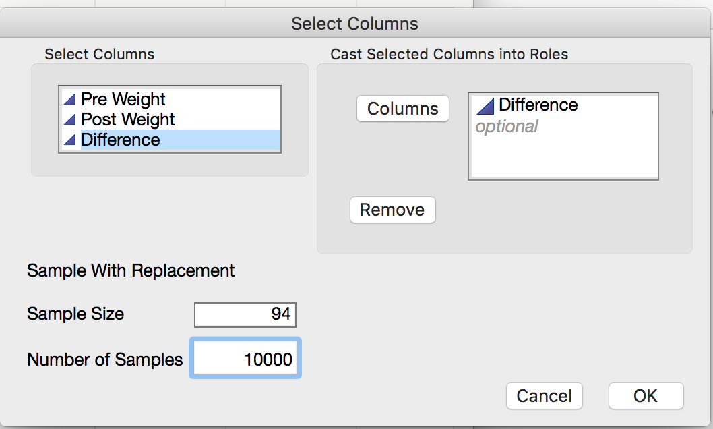
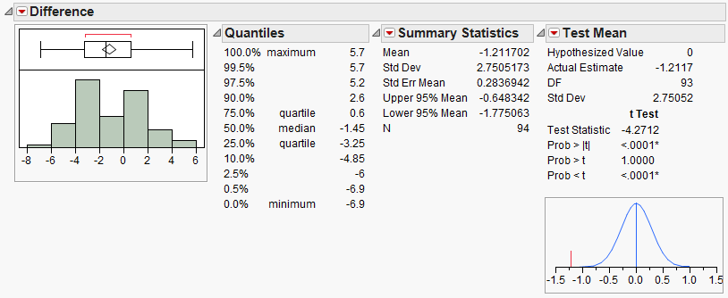

Chapter 7¶
It has been suggested that the amount of black pigmentation on the nose of male lions increases with age. Whitman et al. (2004) measured the proportion of black on the noses of lions of known ages in , . These proportions were obtained from photos and digitally analyzed, and a subset of the original data is given in the file Lions.JMP.
Close-up colour photographs were taken of known-aged lions from the and , between 1999 and 2002. Each photograph was first digitized at high resolution into a .tif file, and the fleshy part of the nose (‘nose tip’) from each image was excised using Adobe Photoshop 4.01 LE. Then, the Spatial Analyst extension of ESRI Arcview 3.2 was used to rasterize each cut-out nose tip and assign each newly created ‘grid’ a range of colour values. By limiting the colour values to either ‘black’ or ‘not black’, the nasal pigmentation pattern was ‘mapped’ and quantified for the percentage of readable pixels that contained ‘black’.
Identification photograph of a 3-yr-old Serengeti male |
Excised photo of nose tip |
|---|---|
|
GIS rendering of nose colouration |

*PEARSON CORRELATION COEFFICIENT*
The Pearson correlation coefficient (denoted by r) is used to describe and measure the relationship between two numerical variables. It is appropriate to use when the following are true:
- The relationship between the two variables is a LINEAR relationship
- Both variables are measured on interval or ratio scales
| The formula for the Pearson product-moment correlation coefficient is given below: |
|---|
** We can also use JMP to directly calculate the Pearson correlation coefficient. Select **Analyze > Multivariate Methods > Multivariate.


Interpreting the Pearson Correlation Coefficient*:
|
|---|
Questions:
- What does this correlation coefficient say about the direction of the relationship between a lion’s age and its proportion of nose blackness?
- What does this correlation coefficient say about the strength of the relationship between a lion’s age and its proportion of nose blackness?
*Caution Regarding Pearson’s Correlation Coefficient*
* *You should never use a correlation coefficient without also looking at a scatterplot of the data. Why? Consider the data in the file Anscombe_Example.JMP.
| Variables | Pearson Correlation Coefficient (*r*) | Scatterplot |
|---|---|---|
| X1, Y1 | r = 0.82 |  |
| X2, Y2 | r = 0.82 |  |
| X3, Y3 | r = 0.82 |  |
| X4, Y4 | r = 0.82 |  |
To avoid misinterpreting a correlation, always accompany the correlation coefficient with a scatterplot of the data and make sure the assumptions behind the Pearson product-moment correlation are met!
* INTRODUCTION TO SIMPLE LINEAR REGRESSION *
Next, we will explore the basic idea behind regression analysis. A simple linear regression model describes the relationship between a numerical response variable (y) and a single predictor variable (x).
Response variable: The dependent variable, or the variable to be modeled.
Predictor variable: The independent variable used as a predictor of the response.
To carry out a simple linear regression analysis in JMP, you can use the Analyze > Fit Y by X menu. Place the y-variable in the Y, Response box and the x-variable in the X, Factor box.

JMP returns the following output:
 *
*
*
*
Click on the red drop-down arrow and select “Fit line” to see the following output:
* Writing the Regression Equation*
***¶
*Predicting the Mean of Y Given X*
To use the lion’s age to predict the proportion of nose blackness, we simply use the equation. For example, predict the proportion of nose blackness for a 4-year-old lion:
***¶
*Caution*: Note that there are several underlying assumptions that must be met in order for us to use this regression model. These are discussed in detail in STAT 310.
*ANOTHER EXAMPLE*
Example 7.2: Consider the data found in the file FEV.jmp. This data is from an investigation which concerns measuring the subjects’ respiratory function, as well as whether the subjects themselves smoke. In this problem, the measured outcome of interest is forced expiratory volume (FEV), which is, essentially, the amount of air an individual can exhale in the first second of a forceful breath. The file includes measurements on the following variables:
- FEV (liters)
- Age (years)
- Height (inches)
- Gender (M/F)
- Smoking Status (Y/N)
One primary question of interest is how pulmonary function differs between smokers and nonsmokers. To investigate this question, we will begin by utilizing some descriptive methods and inferential methods discussed earlier in the semester.

Questions*:
- What do these summaries indicate concerning the relationship between smoking and lung function?
- Do you really believe that this is the case? If not, can you think of any potential problems with either the study itself or our descriptive methods which might cause the data to display this relationship?
Next, let’s consider another variable in the study, Age. We can use a scatterplot to describe how FEV changes across Age:

Let’s calculate the correlation coefficient and the regression line in JMP:

{kind=link}
{kind=link}
{kind=link}
{kind=link}
{kind=link}
{kind=link}
Questions*:
- Interpret the intercept of the regression line in the context of the problem.
- Interpret the slope of the regression line in the context of the problem.
- What can you say about the relationship between Age and lung function? How does this affect the summaries we observed at the beginning of this example?
Finally, let’s examine the relationship between Smoking Status and FEV after accounting for Age. From the red drop-down arrow next to “Bivariate Fit of FEV by Age” select Group by… Smoking Status. From the same drop-down menu, select Fit Line. This requests that JMP fit a regression line for both smokers and nonsmokers. Your scatterplot should appear as follows.
{kind=link}
{kind=link}
{kind=link}
Questions:
- Does it appear that the rate at which a nonsmoker’s FEV increases with Age differs from the rate at which a smoker’s FEV increases with Age? Explain.
- Based on this information, do you think it is fair to examine the relationship between FEV and Smoking Status without accounting for Age? Explain.